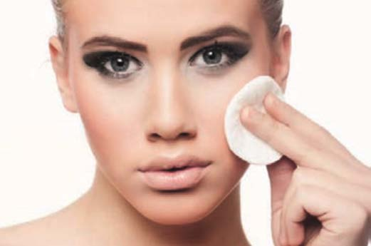
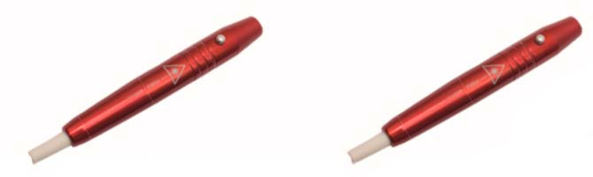
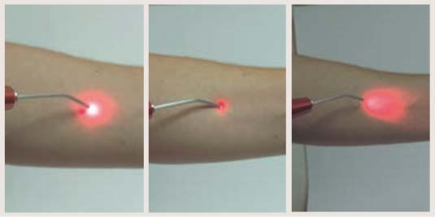
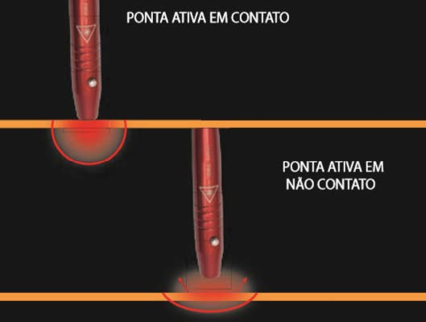
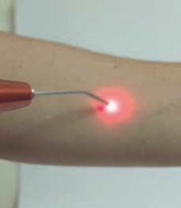
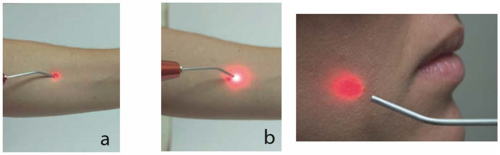
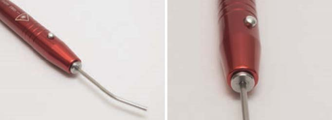

Nas atividades odontológicas, é de extrema importância a conscientização dos riscos no que se refere a biossegurança. A biossegurança é um termo que está relacionado aos cuidados que se deve ter para evitar e/ou diminuir a possibilidade de infecções, as contaminações com produtos tóxicos, a ocorrência de doenças profissionais e a ocorrência de acidentes.
Mesmo em uso nos consultórios e clínicas odontológicas há mais de 20 anos, no Brasil, ainda não existem regras de segurança ou mesmo órgãos governamentais capazes de controlar e orientar esse tipo de modalidade terapêutica, a laserterapia. Dessa forma, a biossegurança para utilização dos sistemas lasers em Odontologia torna-se alvo de discussão muito atual. É preciso, inicialmente, entender a luz laser como um fenômeno com características especiais e depois a interação dessa luz com os tecidos biológicos. Diante disso, os conhecimentos dos possíveis riscos durante a irradiação e dos níveis de cuidados existentes são requisitos essenciais para todos os profissionais que utilizam esse agente terapêutico. Um “Laser Safety Officer” , um físico como membro da equipe odontológica, é o responsável tanto pelo bom funcionamento do equipamento laser, bem como pela orientação aos profissionais da área de saúde e aos pacientes quanto às regras de segurança, antes, durante e após o procedimento operatório. Seguindo essa filosofia, as principais regras de segurança para o uso de lasers, tanto de baixa quanto de alta intensidade, serão discutidos, buscando difundir, com responsabilidade, esse importante e recente instrumento terapêutico, o feixe laser.
A proteção pessoal, isto é, das pessoas envolvidas no uso do laser, consiste basicamente no uso dos óculos de proteção que atenuam o feixe a que se submetem (MAILLET - 1987).
As pessoas que estão freqüentemente expostas ao risco laser, ou aqueles que sofrem uma exposição excessiva, devem ser submetidas regularmente a uma supervisão médica oftalmológica, a fim de que se detecte qualquer dano ocular que possa ter ocorrido. Esta preocupação com a visão é proveniente do fato de que os mais graves acidentes sejam aqueles ocorridos com os olhos, pois a radiação atinge a retina após sofrer uma amplificação de um fator 100.000 vezes. Além disso, o risco ocular está presente em praticamente todos os tipos de lasers. (MAILLET - 1987). A segurança deve ser observada em diferentes níveis, a saber:
2.1 – Procedimento clínico
O bom andamento do procedimento clínico depende de alguns fatores:
• diagnóstico correto;
• profilaxia prévia do local a ser irradiado, empregando anti-sépticos incolores; se a aplicação for intra-oral, para diminuir a absorção e atenuação da energia, e limpeza da pele, quando a aplicação for extra-oral, com solução anti-séptica incolor (figura 6);
• proteger a ponta ativa do laser com plástico (PVC) descartável, para evitar contaminações cruzadas e como medida de higiene (figura 7);
• não realizar aplicações extra-orais em pacientes que usam drogas foto-sensibilizantes endógenas (tetraciclina, griseofulvina, sulfamida e furocumarina) ou exógenas (ácido retinóico e glicólico), pois qualquer luz de alta intensidade poderá interagir com a droga e provocar manchas de pele no local da irradiação (ALMEIDA-LOPES – 2004);
• preferencialmente realizar a aplicação tipo contato, ou seja, tocando a ponta ativa do laser no tecido-alvo (figura 8 e 9), se por algum motivo isso não for possível, distanciar no máximo 0,5cm (figura 10) para não atenuar tanto a energia devido a reflexão do feixe;

Figura 6 – Limpeza facial prévia à aplicação com laser de baixa intensidade em pontos extra-orais.
• quando for possível, fazer uma pequena pressão da ponta ativa contra o tecido-alvo, provocando uma isquemia local e temporária, o que permite uma maior penetrabilidade da luz;

Figura 7 – Colocação do filme de PVC de forma bem esticada (a) evitando difusão do feixe de luz na saída da caneta (ponta convencional) (b).

Figura 8 – Aplicação em contato e (a) e em contato com pressão (b) (melhores formas de aplicação) e não-contato com uma distância superior a 0,5 cm (c), resultando em grande perda da energia a ser entregue, sendo desaconselhável.
• ausência de materiais refletores no campo operatório: recomenda-se o uso de instrumentos não refletores durante o manuseio do laser, visto que alguns instrumentos odontológicos são capazes de produzir reflexões do feixe que podem resultar em danos a tecidos biológicos tanto no operador quanto no paciente (MISERENDINO et al. - 1995);
• descartar a ponta em fibra óptica para terapia fotodinâmica (figura 12b) em recipiente apropriado para instrumentos perfuro-cortantes;
• acompanhamento do caso por pelo menos doze meses; e,
• observação das contra-indicações.

Figura 9 – Desenho esquemático mostrando a influência da forma de aplicação e distância da ponta ativa do tecido-alvo na profundidade de penetração do laser.

Figura 10 – Laser sendo aplicado na forma não-contato, porém com uma distância inferior ou igual a 0,5cm.
2.2 – Dosimetria laser
Dosimetria não é a Dose ou o conjunto das doses mais indicadas e bem sucedidas. Dosimetria não é sequer a forma de calcular “a dose mais indicada”. Dosimetria é sim o conjunto de manobras e táticas que o pesquisador/clínico utiliza para adequar a fonte de luz e/ou o equipamento a base de laser de baixa intensidade, para entregar superficilamente no tecido-alvo a quantidade de energia mais eficiente para o tratamento em questão. Trata-se do item mais controverso dentro da laserterapia de baixa intensidade. Isso acontece porque ainda é muito difícil calcular a quantidade exata de energia entregue, absorvida e espalhada.
Quando pensamos em dosimetria temos que ter em mente que o seu significado não é apenas o entendimento de quanto é a dose, ou qual o conjunto de doses seria mais bem indicada em cada caso. A dosimetria na verdade representa o ponto mais controverso da laserterapia atual. Para entender a dosimetria não podemos nos basear apenas na forma de como calcular a dose, mas sim compreender que existe um conjunto de manobras táticas que o pesquisador/clínico se utiliza para adequar a fonte de luz e/ou o equipamento às bases científicas do laser de baixa intensidade,. E assim, podemos de maneira efetiva entregar no tecido-alvo a quantidade de energia mais eficiente para o tratamento em questão. A dosimetria reflete diretamente a dose que também é conhecida como fluência ou densidade de energia. Ao descrever a dosimetria temos que incluir mais dois parâmetros muito importantes que são a energia e a irradiância. Veremos a diante com detalhes esses parâmetros. Ademais aos parâmetros dosimétricos temos que levar em consideração a interação da luz com esse tecido permite diferentes formas de absorção e espalhamento dessa luz direcionada num volume de tecido que determina sim um volume irradiado e não mais uma área irradiada.
Já não se aceita apenas entender a dose como a densidade de energia entregue, sim porque no conteúdo inteiro deste livro-manual, estaremos sugerindo as doses ou fluências ou densidades de energia ENTREGUES na superfície do tecido-alvo. Isso porque a interação da luz com esse tecido permite diferentes formas de absorção e espalhamento dessa luz direcionada num volume de tecido que determina sim um volume irradiado e não mais uma área irradiada. Entretanto, como calcular esse volume? Como prever como determinado comprimento de onda com determinada potência de saída se distribuirá no volume de um determinado tecido biológico?

Figura 11 - Comportamento da luz de um laser vermelho 660nm, com uma potência de saída de 100mW no tecido (pele): a – sobre uma região periférica de uma lesão de queimadura; e, b – sobre a lesão propriamente dita.
Na figura 11, de uma forma muito simples, basta observar como a luz do laser vermelho 660nm com a potência de saída de 40mW se comporta após ser entregue na superfície. Os halos formados ao redor da ponta ativa da caneta-laser demonstram o comportamento dessa luz dentro desse tecido irradiado. Na região onde parte desse tecido não está lesionado com a queimadura (figura 11a) o halo mais claro (centro do feixe laser) tem um diâmetro menor, enquanto que o halo mais vermelho (externo) tem um diâmetro maior (observar as barras comparativas); provavelmente nessa situação da figura 11a, onde a absorção do laser foi menor, tendo um halo claro de absorção com menor diâmetro e um halo vermelho de espalhamento maior. Por outro lado, quando o laser irradia o tecido central da lesão de queimadura, o halo mais claro, que demonstra a absorção do laser, apresenta um diâmetro maior, enquanto que o halo vermelho de espalhamento, um diâmetro menor. A ciência vem evoluindo nesse assunto e descobrindo fórmulas mais adequadas e com menor erro para o cálculo da dose mais indicada em cada enfermidade. Porém, o mais importante é entender as características ópticas do tecido-alvo; entender como determinada fonte de luz pode interagir com esse tecido-alvo; e, então, adequar as fluências entregues, sempre observando as respostas a cada sessão que o paciente relatar.
O tecido biológico não é exato. Apesar de toda a fisiologia operar de forma organizada, em tecidos lesionados, todo o metabolismo apresentará uma alteração, passível de ser observada tanto ao nível molecular quanto ao nível comportamental do paciente. Sendo assim, é muito importante que o cirurgião-dentista mantenha-se focalizado e atento aos sinais durante e após cada irradiação. Serão esses sinais que determinarão o decorrer de todo o tratamento com a laserterapia.
Os parâmetros seguros de operação dos lasers devem ser escolhidos segundo a situação clínica a ser tratada, a fase na qual a lesão se encontra, as características ópticas do tecido a ser irradiado e a metodologia de irradiação do laser (puntual ou varredura, contato ou não-contato). Além disso, é muito importante conhecer bem as características técnicas do equipamento que está sendo utilizado, tais como: potência máxima, se essa potência é fixa ou variável, a área da ponta ativa da caneta de aplicação, comprimento de onda, localização do ponto de focalização do equipamento.
Para os lasers de baixa potência, os cálculos mais utilizados na clínica são empregandos as fórmulas para encontrar a fluência ou dose, dada pela energia por área (J/cm²), que é a densidade de energia.
No início do uso da laserterapia, nos anos sessenta, os pesquisadores acreditavam que sempre a área atingida pelo laser de baixa intensidade, no tecido irradiado, independente da potência, da dose, das características ópticas do tecido e do comprimento de onda, era a de 1,0 J/cm². No entanto, com o avanço dos equipamentos para medida de penetrabilidade da luz na matéria e com o entendimento melhor dessa interação luz-matéria, hoje sabemos que nem sempre é essa a área efetivamente irradiada e para tanto, mudou-se a forma de calcular a dose adequada.
Primeiramente é preciso saber se a aplicação será realizada pontualmente (pontos separados) ou por varredura (ponta do laser em contato e em movimento uniforme com velocidade constante). Se for pontualmente, é preciso saber a área do “spot” da ponta ativa do laser, se for por varredura, a área considerada será a da lesão a ser irradiada.

Figura 12– Ponta projetada para terapia fotodinâmica (descartável) ( que deve ser acoplada numa ponta especial e então encaixada na extremidade ativa da caneta, removendo-se a ponta convencional.
2.3 – Biossegurança específica para o uso dos lasers de baixa intensidade
Ao fazer o uso dos lasers de baixa intensidade, deve-se observar:
• a escolha do comprimento de onda mais indicado para cada enfermidade;
• a escolha da dose adequada para bioestimulação ou para bioinibição;
• peles muito escuras ou muito claras pedem uma dose maior de energia, cerca de 1/3 acima da dose indicada; isto porque quando muito escuras absorvem muito na superfície, por outro lado quando são muito claras, refletem muito, em ambos os casos estarão comprometendo a profundidade de penetração;
• se a paciente for gestante, evitar direcionar o laser para o feto;
• não irradiar áreas em hemorragia;
• cautela ao irradiar áreas infectadas, melhor evitar e optar pela drenagem linfática;
• não irradiar área com hipoestesia ao calor e/ou dor;
• evitar as linhas epifiseais em crianças;
• evitar irradiar crianças com menos de 2 anos de idade;
• as doses indicadas para crianças são menores do que as indicadas para adultos, considerando as mesmas enfermidades, a experiência clinica considera indicado empregar 1/3 das doses indicadas para adultos;
• não irradiar gânglios simpáticos;
• quando o paciente for cardiopata, evitar a região cardíaca;
• não irradiar nervos vagos;
• evitar irradiar as gônadas; e,
• ser cauteloso com pacientes cujos reflexos são obtundentes.